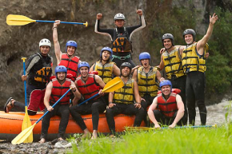

At Blue Water Rafting, our purpose is to ignite the spirit of adventure while fostering a deep connection to nature. We believe in creating unforgettable experiences that blend the thrill of exploration with a profound respect for the rivers and ecosystems we cherish. Our mission is to provide safe, sustainable, and exhilarating outdoor adventures that leave a positive impact on our guests, our community, and the environment. Through responsible tourism, innovative expeditions, and partnerships with local stakeholders, we strive to inspire a love for the natural world and a commitment to its preservation for generations to come.